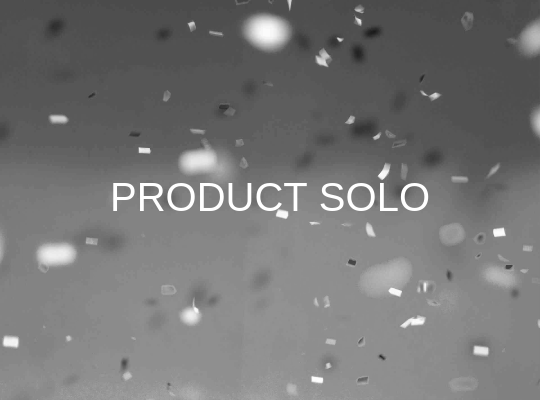

Pentingnya Membuat Design System Di Dalam Project UI UX Design
Oleh Thariq Luqmana

Awalan
Bayangkan bekerja dalam sebuah tim besar untuk membuat sebuah produk digital, tapi setiap kali Anda memulai sebuah halaman atau fitur baru, desainnya terasa tidak konsisten. Ada perbedaan warna di setiap halaman, tombol-tombol memiliki gaya yang berbeda-beda, dan elemen UI (User Interface) terlihat tak selaras. Ini membuat tim Anda frustrasi, memperlambat pekerjaan, dan bisa berujung pada pengalaman pengguna yang buruk. Apakah ada solusi? Tentu saja ada, dan jawabannya adalah Design System!
Design System adalah penyelamat yang dapat membuat proses desain lebih terorganisir, konsisten, dan efisien. Bukan hanya itu, design system juga membantu menyatukan tim, memastikan pengalaman pengguna yang seragam, dan membuat semua pihak merasa lebih nyaman bekerja di dalamnya. Dalam artikel ini, kita akan membahas secara mendalam tentang pentingnya membuat design system dalam setiap project UI/UX, mengapa ini penting, dan bagaimana Anda bisa mulai membuatnya sendiri.
Apa Itu Design System dan Kenapa Anda Harus Peduli?
Design system adalah sebuah kumpulan komponen desain yang bisa digunakan kembali di seluruh produk digital. Ini mencakup gaya visual (warna, tipografi, spasi), komponen UI (tombol, form, navigasi), dan bahkan panduan pengembangan. Design system bertindak sebagai “kit” yang memungkinkan tim desain dan pengembangan untuk membuat produk yang konsisten dan scalable, tanpa harus mendesain dari awal setiap kali.
Mengapa Design System Penting dalam Project UI/UX?
- Konsistensi Desain: Setiap elemen UI akan terlihat dan berfungsi dengan cara yang sama di seluruh produk, yang berarti pengguna tidak akan kebingungan karena tampilan atau pengalaman yang berbeda di setiap halaman atau fitur. Konsistensi sangat penting untuk menciptakan pengalaman pengguna yang mulus dan memuaskan.
- Efisiensi Kerja: Tanpa design system, tim desain harus terus-menerus membuat komponen UI baru, yang tidak hanya memakan waktu tapi juga rentan terhadap inkonsistensi. Dengan design system, desainer dan developer bisa menggunakan komponen yang sudah ada, mempercepat proses kerja.
- Kolaborasi yang Lebih Mudah: Design system menyatukan tim desain dan pengembangan, karena semua orang bekerja berdasarkan komponen dan panduan yang sama. Tidak ada kebingungan mengenai gaya desain atau cara implementasi. Ini mengurangi miskomunikasi dan membuat kolaborasi antar tim menjadi lebih lancar.
- Mudah untuk Dikembangkan: Design system memungkinkan produk untuk terus berkembang dengan cepat dan mudah. Ketika ada perubahan pada komponen UI, perubahan ini hanya perlu dilakukan sekali, dan seluruh produk akan diperbarui secara otomatis. Ini membuat skalabilitas menjadi lebih mudah.
- Pengalaman Pengguna yang Lebih Baik: Dengan desain yang konsisten, pengguna merasa lebih nyaman dan mudah menavigasi aplikasi atau situs web Anda. Mereka tahu apa yang diharapkan di setiap halaman karena komponen dan tampilan yang seragam. Ini meningkatkan pengalaman pengguna secara keseluruhan.
Bagaimana Cara Membuat Design System yang Kuat?
Membuat design system mungkin terdengar menakutkan, tetapi dengan mengikuti beberapa langkah ini, Anda bisa membangunnya dengan baik dan menyenangkan!
-
Mulai dengan Inventarisasi Desain Langkah pertama adalah melakukan audit terhadap desain yang sudah ada. Periksa semua komponen desain yang saat ini digunakan di dalam produk Anda. Apa yang konsisten? Apa yang berbeda-beda? Setelah Anda menginventarisasi semuanya, Anda bisa mulai menentukan komponen mana yang perlu dipertahankan, diperbaiki, atau diganti.
-
Definisikan Prinsip Desain Design system yang baik dimulai dengan prinsip desain yang kuat. Prinsip ini akan menjadi panduan untuk membuat keputusan desain ke depannya. Misalnya, apakah Anda ingin desain Anda minimalis dan modern, atau kaya warna dan detail? Prinsip ini harus mencerminkan visi merek dan pengalaman pengguna yang ingin Anda ciptakan.
-
Tentukan Elemen UI Utama Elemen-elemen seperti warna, tipografi, spasi, ikonografi, dan tombol adalah fondasi dari design system. Definisikan gaya untuk masing-masing elemen ini dan buat panduan yang jelas tentang cara menggunakannya. Sebagai contoh, tentukan palet warna primer dan sekunder, jenis font yang akan digunakan, serta jarak antar elemen di setiap halaman.
-
Buat Komponen yang Bisa Digunakan Ulang Salah satu tujuan utama design system adalah memungkinkan komponen UI untuk digunakan kembali di berbagai tempat. Komponen ini bisa mencakup tombol, form input, kartu, modals, dan sebagainya. Pastikan setiap komponen memiliki variasi yang bisa disesuaikan, tetapi tetap konsisten secara visual.
-
Buat Dokumentasi yang Jelas Dokumentasi adalah jantung dari design system. Semua elemen dan komponen harus didokumentasikan dengan jelas agar semua orang di tim tahu cara menggunakannya. Dokumentasi ini harus mencakup contoh penggunaan, aturan desain, dan bahkan panduan pengembangan. Ini akan menjadi referensi utama bagi desainer dan developer ketika bekerja dengan design system.
-
Lakukan Iterasi Secara Teratur Design system bukanlah sesuatu yang selesai dalam satu waktu. Ini adalah dokumen yang hidup dan harus diperbarui secara berkala. Saat produk Anda berkembang, begitu juga dengan design system. Pastikan untuk melakukan iterasi dan memperbarui komponen atau elemen UI sesuai kebutuhan.
Tools yang Dapat Membantu dalam Pembuatan Design System
Berikut beberapa tools yang dapat membantu Anda membuat dan mengelola design system dengan lebih efisien:
- Sketch & Figma: Platform desain ini memungkinkan Anda membuat komponen UI reusable dan mendokumentasikan design system dengan mudah.
- Zeplin & InVision: Tools ini membantu menghubungkan desainer dengan developer untuk memudahkan proses pengembangan.
- Storybook: Digunakan oleh tim developer untuk mengelola dan mengembangkan komponen UI secara modular.
Mulailah Membangun Design System Anda Hari Ini!
Dengan semua manfaat yang ditawarkan oleh design system, tidak ada alasan untuk menunda memulai proyek ini. Design system akan menghemat waktu, mengurangi frustasi, dan meningkatkan kolaborasi antara tim desain dan pengembangan. Lebih penting lagi, ini akan memberikan pengalaman pengguna yang lebih konsisten dan menyenangkan.
Apakah Anda seorang desainer, developer, atau product manager, design system adalah alat yang sangat berharga yang bisa membawa proyek UI/UX Anda ke level berikutnya. Jangan takut untuk memulai dari yang kecil, karena setiap langkah yang diambil menuju sistem yang lebih baik akan memberikan dampak besar dalam jangka panjang.
Sekaranglah waktunya! Coba mulai dengan mengaudit desain yang sudah ada, buat komponen reusable pertama Anda, dan mulai dokumentasikan semua elemen UI dengan jelas. Ajak tim Anda untuk berkolaborasi, dan lihat seberapa cepat design system akan meningkatkan kualitas dan efisiensi proyek UI/UX Anda. Design system bukan hanya tentang desain yang cantik, tapi juga tentang menciptakan produk yang mudah digunakan, efektif, dan scalable. Mulailah hari ini, dan nikmati keuntungannya untuk waktu yang lama!